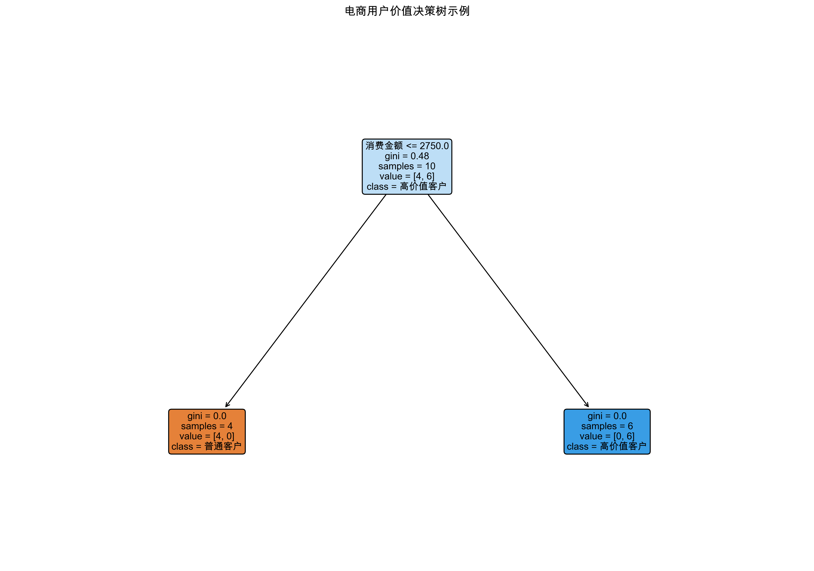
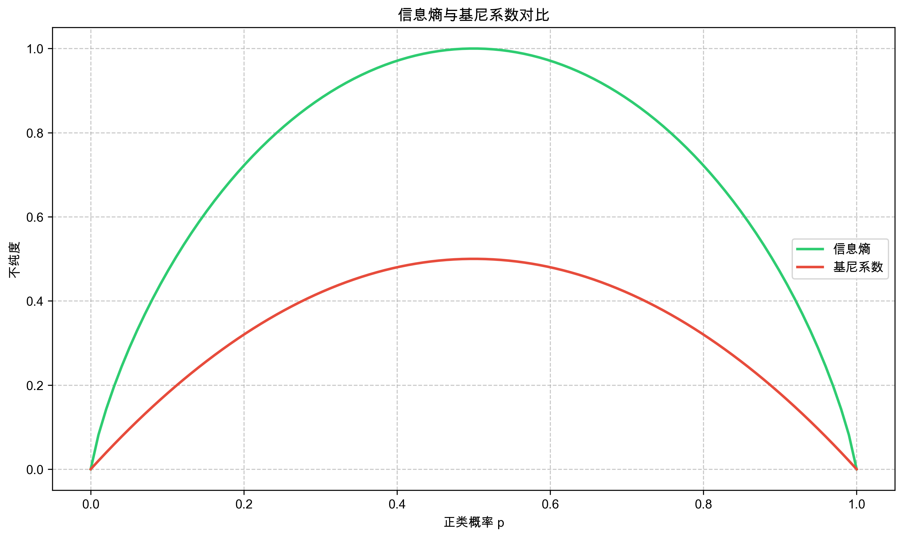
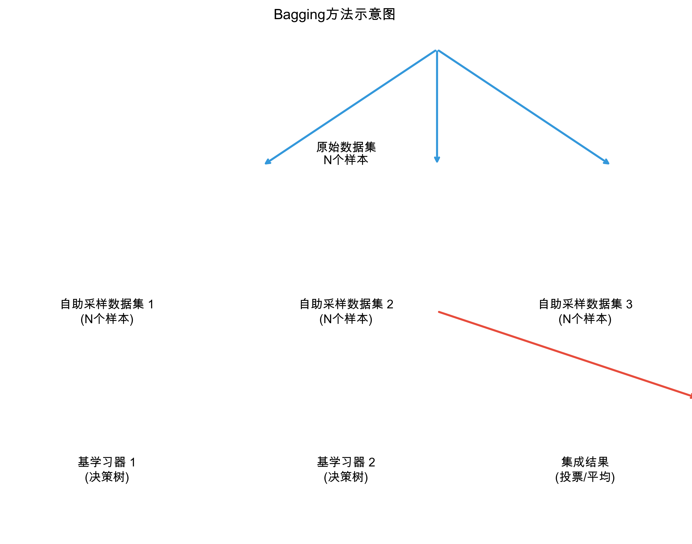
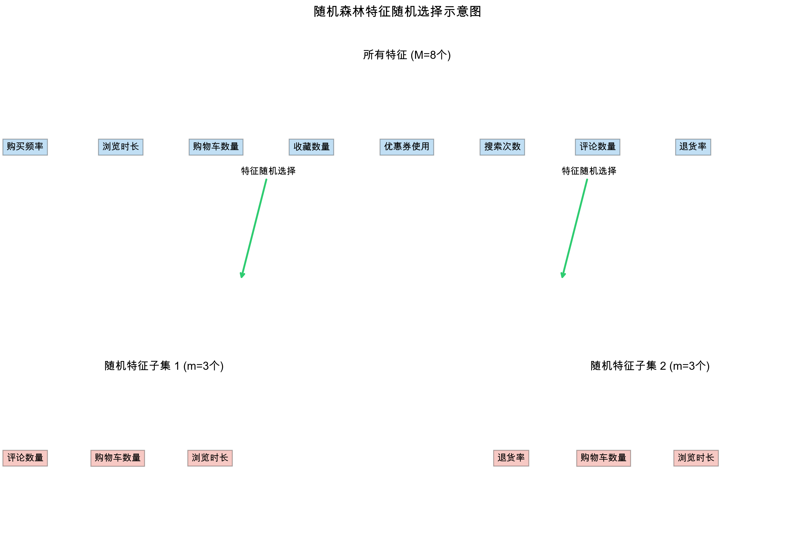
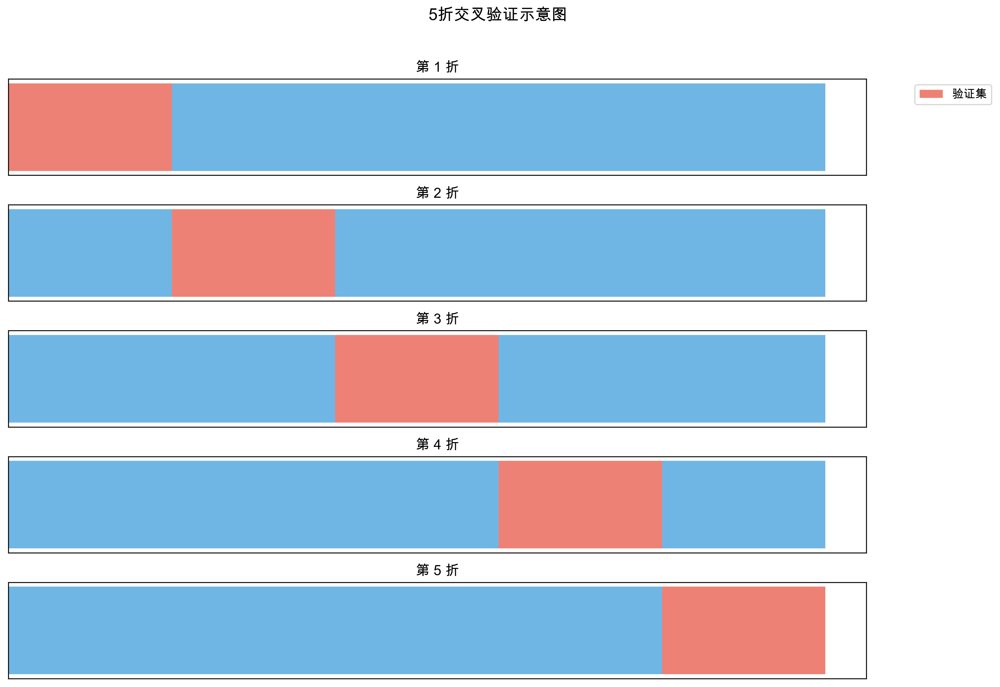

第四周：分类算法基础 (二) - 决策树与集成学习 (随机森林)
第一次课：分类算法 (二) - 决策树与集成学习 (随机森林)
- 掌握决策树算法的原理、信息增益/基尼系数的计算方法和
Scikit-learn实现。 - 理解决策树的优缺点，并能够进行可视化展示。
- 掌握集成学习 Bagging 方法和随机森林算法的原理和
Scikit-learn实现。 - 理解随机森林的优缺点和特征重要性的概念。
- 回顾分类模型评估指标，并深入理解交叉验证和网格搜索的模型选择与调优方法。
- 能够根据不同的应用场景选择合适的分类模型评估指标。
- 使用
Scikit-learn构建、评估和调优决策树和随机森林分类模型。 - 比较不同分类模型在电商用户行为数据集上的性能。
- 使用 AI 辅助编程工具完成模型训练、评估和调优代码。
- 使用随机森林算法优化小组项目一的电商用户行为分类模型。
内容概要
- 决策树 (Decision Tree)
- 树形结构: 决策树是一种树形结构的分类模型，每个内部节点表示一个特征的测试，每个分支代表一个测试输出，每个叶节点代表一个类别。

- 决策过程: 从根节点开始，根据样本在每个节点上的特征取值，递归地将样本分到不同的分支，直到到达叶节点，叶节点对应的类别即为预测结果。
- 非线性模型: 决策树可以处理非线性数据，能够进行复杂的分类。
- 特征选择 (分裂准则): 决策树算法的关键在于如何选择最优的特征进行节点分裂。 “最优”特征是指能够最大程度提高数据纯度的特征。 常用的分裂准则包括：
信息增益 (Information Gain): 基于信息熵 (Entropy) 的分裂准则。 信息熵 衡量了数据集的混乱程度，熵越高，数据越”乱”，纯度越低。 信息增益 表示使用某个特征进行分裂后，数据集信息熵减少的程度。 选择信息增益最大的特征进行分裂，意味着使用该特征分裂后，数据变得更有序，纯度更高。
- 信息熵 (Entropy) 公式: \(Entropy(S) = - \sum_{i=1}^{c} p_i \log_2(p_i)\)，其中 \(S\) 是数据集， \(p_i\) 是类别 \(i\) 在数据集 \(S\) 中所占的比例，\(c\) 是类别数量。 熵值越大，数据集纯度越低。

信息熵与基尼系数对比 - 信息增益 (Information Gain) 公式: \(Gain(S, A) = Entropy(S) - \sum_{v \in Values(A)} \frac{|S_v|}{|S|} Entropy(S_v)\)，其中 \(A\) 是特征， \(Values(A)\) 是特征 \(A\) 的取值集合， \(S_v\) 是特征 \(A\) 取值为 \(v\) 的子数据集。 信息增益越大，使用特征 \(A\) 分裂数据集 \(S\) 带来的纯度提升越大。
Note信息增益直观理解: 信息增益就像是”提纯”数据的能力。 选择信息增益大的特征，就像是用更有效的”筛子”来筛选数据，使得相同类别的样本更集中在一起，不同类别的样本更容易区分开。
基尼系数 (Gini Impurity): 基于基尼指数 (Gini Index) 的分裂准则。 基尼指数 衡量了数据集的不纯度，基尼指数越小，数据纯度越高。 选择使得基尼系数下降最快的特征进行分裂，意味着使用该特征分裂后，数据的不纯度降低得最多，纯度提升最大。
- 基尼指数 (Gini Index) 公式: \(Gini(S) = 1 - \sum_{i=1}^{c} p_i^2\)，其中 \(S\) 是数据集， \(p_i\) 是类别 \(i\) 在数据集 \(S\) 中所占的比例，\(c\) 是类别数量。 基尼指数越大，数据集纯度越低。
- 基尼系数增益 (Gini Gain): 类似于信息增益，基尼系数增益表示使用某个特征分裂后，基尼系数下降的程度。 决策树算法会选择基尼系数增益最大的特征进行分裂。
Note基尼系数直观理解: 基尼系数可以理解为衡量数据”杂乱”程度的指标。 选择基尼系数下降最快的特征，就像是用最有效的”梳子”来梳理数据，使得数据更有条理，相同类别的样本更”抱团”，不同类别的样本更”分离”。
Scikit-learn实现决策树: 使用sklearn.tree.DecisionTreeClassifier类。
import pandas as pd
from sklearn.model_selection import train_test_split
from sklearn.tree import DecisionTreeClassifier
from sklearn.metrics import accuracy_score, classification_report
from sklearn.tree import export_graphviz
import graphviz
# 加载电商用户行为数据集 (假设已预处理完成)
data = pd.read_csv('ecommerce_user_behavior_preprocessed.csv') # 请替换为您的数据集路径
# 假设 'label' 列为分类目标变量，其他列为特征变量
X = data.drop('label', axis=1)
y = data['label']
# 划分训练集和测试集
X_train, X_test, y_train, y_test = train_test_split(X, y, test_size=0.2, random_state=42)
# 创建 DecisionTreeClassifier 模型
dt_model = DecisionTreeClassifier(criterion='gini', max_depth=5) # 可以调整 criterion, max_depth 等参数
# 训练模型
dt_model.fit(X_train, y_train)
# 预测测试集
y_pred = dt_model.predict(X_test)
# 评估模型
accuracy = accuracy_score(y_test, y_pred)
print(f"决策树模型准确率: {accuracy:.4f}")
print("\n分类报告:\n", classification_report(y_test, y_pred))
# 可视化决策树 (需要安装 graphviz)
dot_data = export_graphviz(dt_model, out_file=None,
feature_names=X_train.columns,
class_names=[str(c) for c in dt_model.classes_],
filled=True, rounded=True,
special_characters=True)
graph = graphviz.Source(dot_data)
graph.render("decision_tree") # 保存为 decision_tree.pdf
graph # 在 notebook 中显示- 决策树的优点:
- 易于理解和解释，树形结构可视化直观。
- 可以处理类别型和数值型数据。
- 对数据预处理要求不高，不需要特征缩放。
- 能够处理非线性关系。
- 决策树的缺点:
- 容易过拟合，特别是当树的深度过大时。
- 对数据中的噪声和异常值比较敏感。
- 决策树模型不稳定，数据的小幅变动可能导致树结构发生很大变化。
- 集成学习 - Bagging 与随机森林 (Random Forest)
- 集成学习 (Ensemble Learning): 将多个”弱学习器” (weak learner, 例如简单的决策树) 集成起来，构建一个”强学习器” (strong learner)，提高模型的泛化能力和鲁棒性。 “众人拾柴火焰高”，集成学习的核心思想就是 “集思广益”，通过多个模型的共同决策来提高整体性能。
Bagging (Bootstrap Aggregating): 一种常用的集成学习方法，名字 “Bagging” 来自于 “Bootstrap Aggregating” (自助抽样聚合)。 Bagging 的核心思想是 降低模型的方差 (Variance)，提高模型的稳定性。
- 自助采样 (Bootstrap Sampling): 从原始数据集中 有放回地随机抽取 多个子数据集 (bootstrap sample)。 “有放回” 意味着每次抽取的样本，下次抽取时仍然可能被抽到。 这样，每个子数据集都和原始数据集大小相近，但样本组成略有不同。
- 基学习器训练: 基于每个子数据集，训练一个 独立的基学习器 (例如决策树)。
- 集成 (Aggregating): 将所有基学习器的预测结果进行 集成。 对于分类问题，通常使用 投票法 (Voting)，即选择得票最多的类别作为最终预测结果；对于回归问题，通常使用 平均法 (Averaging)，即对所有基学习器的预测值取平均。

Bagging方法示意图 NoteBagging 原理的形象理解: Bagging 就像是 “三个臭皮匠顶个诸葛亮”。 每个基学习器就像是一个 “臭皮匠”，可能模型能力有限，容易犯错 (高方差)。 但通过 Bagging 将多个 “臭皮匠” 的预测结果 “投票” 起来，就相当于进行了 “集体决策”，可以降低犯错的概率，得到更可靠、更稳定的预测结果，最终 “顶” 上一个 “诸葛亮” (低方差、高性能的强学习器)。
Bagging 降低方差的直观解释: 想象一下，你要预测明天的天气。 如果只问一个气象专家，预测结果可能比较依赖于该专家的个人经验，有一定的偶然性 (高方差)。 但如果同时问 10 个气象专家，并将他们的预测结果综合起来 (例如取平均或投票)，那么最终的预测结果就会更加稳定可靠，不容易受到个别专家预测失误的影响 (低方差)。 Bagging 的自助采样和集成过程，就类似于 “多咨询几个专家，综合决策” 的过程，可以有效降低模型的方差，提高模型的稳定性。
- 随机森林 (Random Forest): Bagging 的一种变体，在 Bagging 的基础上，进一步引入了特征的随机选择。 随机森林以决策树为基学习器，并在决策树的训练过程中引入了 随机特征选择。 随机森林的 “随机性” 体现在两个方面：
- 样本随机性 (Bagging 引入): 使用自助采样随机抽取子数据集。
- 特征随机性 (随机森林特有): 在每个节点分裂时，随机选择一部分特征 (而不是考虑所有特征) 进行分裂特征的选择。 例如，如果共有 \(M\) 个特征，随机森林在每个节点分裂时，会随机选择 \(m\) 个特征 (\(m < M\))，然后从这 \(m\) 个特征中选择最优的分裂特征。 通常 \(m\) 的取值建议为 \(\sqrt{M}\)。

随机森林特征随机选择示意图 Note随机森林特征随机选择的重要性: 特征随机选择使得随机森林中的决策树更加 “多样化”，进一步降低了模型之间的相关性，使得随机森林的泛化能力更强，更不容易过拟合。
特征随机选择的直观理解: 继续用 “气象专家预测天气” 的例子。 随机森林不仅咨询多个气象专家 (Bagging)，而且还要求每个气象专家在预测天气时，只允许参考一部分气象指标 (例如，专家 A 只能参考温度和湿度，专家 B 只能参考风速和气压，等等)。 这样，每个专家都只能 “片面” 地看问题，但多个 “片面” 的预测结果综合起来，反而可能得到更全面、更准确的预测。 特征随机选择的目的就是 限制单个决策树的能力，避免模型过度依赖于某些强特征，从而提高模型的整体泛化能力。
随机森林的优缺点- 随机森林的优点:
- 精度高，泛化能力强，不容易过拟合。 随机森林通过集成多个决策树，并引入样本随机性和特征随机性，有效降低了过拟合的风险。
- 能够处理高维数据，不需要进行特征选择。 随机森林在特征选择时引入了随机性，降低了特征维度过高带来的影响。
- 可以评估特征的重要性。 随机森林可以输出每个特征在模型训练过程中的重要性评分，用于特征选择和特征理解。
- 对缺失值和异常值有一定的鲁棒性。
- 易于并行化，训练速度快。
- 随机森林的缺点:
- 模型可解释性较差，相对于决策树，随机森林的模型结构更复杂，难以解释。
- 当随机森林中的决策树数量非常大时，模型训练和预测的计算开销会比较大。
Scikit-learn实现随机森林: 使用sklearn.ensemble.RandomForestClassifier类。
import pandas as pd
from sklearn.model_selection import train_test_split
from sklearn.ensemble import RandomForestClassifier
from sklearn.metrics import accuracy_score, classification_report
import matplotlib.pyplot as plt
import seaborn as sns
# 加载电商用户行为数据集 (假设已预处理完成)
data = pd.read_csv('ecommerce_user_behavior_preprocessed.csv') # 请替换为您的数据集路径
# 假设 'label' 列为分类目标变量，其他列为特征变量
X = data.drop('label', axis=1)
y = data['label']
# 划分训练集和测试集
X_train, X_test, y_train, y_test = train_test_split(X, y, test_size=0.2, random_state=42)
# 创建 RandomForestClassifier 模型
rf_model = RandomForestClassifier(n_estimators=100, max_depth=10, random_state=42) # 可以调整 n_estimators, max_depth 等参数
# 训练模型
rf_model.fit(X_train, y_train)
# 预测测试集
y_pred = rf_model.predict(X_test)
# 评估模型
accuracy = accuracy_score(y_test, y_pred)
print(f"随机森林模型准确率: {accuracy:.4f}")
print("\n分类报告:\n", classification_report(y_test, y_pred))
# 特征重要性
feature_importances = pd.Series(rf_model.feature_importances_, index=X_train.columns).sort_values(ascending=False)
plt.figure(figsize=(10, 6))
sns.barplot(x=feature_importances, y=feature_importances.index)
plt.title("随机森林特征重要性")
plt.show()
- 模型评估与选择 (回顾与实践)
- 模型评估指标回顾: 准确率、精确率、召回率、F1-score、AUC-ROC 等 (回顾第三周内容)。
- 交叉验证 (Cross-Validation): K 折交叉验证的详细讲解和实践，使用
sklearn.model_selection.cross_val_score和sklearn.model_selection.KFold。

- 网格搜索 (GridSearchCV):
GridSearchCV的详细讲解和实践，使用sklearn.model_selection.GridSearchCV进行模型参数调优。
// ... existing code ...分类模型评估指标的选择和应用场景: 选择合适的评估指标，需要根据具体的业务目标和问题类型来决定。 不同的评估指标关注模型的不同方面，适用于不同的应用场景。
准确率 (Accuracy): 最常用的评估指标之一， 表示模型预测正确的样本比例。 适用于类别分布均衡的分类问题。 例如，在手写数字识别、图像分类等问题中，如果每个类别的样本数量相差不大，可以使用准确率作为主要评估指标。 但当类别分布不均衡时，准确率可能会产生误导。 例如，如果在一个疾病预测问题中，99% 的样本都是健康人，模型如果将所有人都预测为健康，也能达到 99% 的准确率，但这显然不是一个好的模型。
精确率 (Precision) 和 召回率 (Recall): 适用于类别分布不均衡的分类问题。 精确率关注 “预测为正例的样本中，有多少是真正的正例”， 召回率关注 “真正的正例样本中，有多少被模型预测为正例”。
- 精确率的应用场景: 当更关注 “预测为正例的准确性” 时，例如，在垃圾邮件识别中，我们更关注 “被模型判断为垃圾邮件的邮件，有多少是真正的垃圾邮件”， 因为如果将正常邮件误判为垃圾邮件，可能会造成用户的重要信息丢失，误判的代价较高。 此时，我们希望提高精确率，降低误判率 (FP)。
- 召回率的应用场景: 当更关注 “对正例的识别能力” 时，例如，在疾病诊断中，我们更关注 “真正的病人中，有多少被模型诊断出来”， 因为如果漏诊病人，可能会延误治疗，造成更严重的后果，漏诊的代价较高。 此时，我们希望提高召回率，降低漏诊率 (FN)。
F1-score: 精确率和召回率的调和平均值，综合考虑了精确率和召回率。 适用于类别分布不均衡，且希望平衡精确率和召回率的场景。 例如，在欺诈交易检测、用户流失预测等问题中，我们既希望尽可能准确地识别出欺诈交易或潜在流失用户 (提高精确率)，也希望尽可能全面地覆盖所有欺诈交易或潜在流失用户 (提高召回率)，此时可以使用 F1-score 作为综合评估指标。
AUC-ROC (Area Under the ROC Curve): 适用于二分类问题，特别是当需要权衡不同阈值下的模型性能时。 ROC 曲线描述了在不同阈值下，模型的真正例率 (TPR, 召回率) 和假正例率 (FPR) 之间的关系。 AUC 值是 ROC 曲线下的面积，AUC 值越大，模型性能越好。 AUC-ROC 关注的是模型对正负样本的排序能力，对类别分布不均衡的情况不敏感， 因此在类别不均衡问题中也经常使用。
Note模型评估指标选择总结: 没有 “万能” 的评估指标，选择合适的评估指标需要根据具体的业务场景和问题目标来决定。 理解各种评估指标的含义和适用场景，才能更好地评估模型性能，并根据评估结果优化模型。
实践环节
- 使用
Scikit-learn构建和评估决策树和随机森林分类模型。 - 使用网格搜索和交叉验证进行模型调优。
- 比较逻辑回归、SVM、决策树和随机森林在电商用户行为数据集上的性能。
- 使用 AI 工具辅助完成模型训练、评估和调优代码。
小组项目一：电商用户行为数据分类模型优化 (随机森林)
- 项目目标: 使用随机森林算法，优化小组项目一的电商用户行为分类模型，并与之前使用的逻辑回归或 SVM 模型进行性能比较。
- 项目任务 (小组完成):
- 数据准备: 继续使用预处理后的电商用户行为数据集。
- 模型选择: 选择随机森林算法构建分类模型。
- 模型训练与调优: 使用训练集训练随机森林模型，并使用网格搜索和交叉验证进行模型参数调优，选择最佳模型参数。
- 模型评估与比较: 使用测试集评估优化后的随机森林模型性能，计算并分析模型评估指标，并将随机森林模型的性能与之前小组项目一中使用的逻辑回归或 SVM 模型的性能进行比较。
- 特征重要性分析: 分析随机森林模型的特征重要性，尝试解释模型预测结果。
- 撰写实验报告: 在之前的实验报告基础上，补充决策树和随机森林模型的实验过程、模型参数、评估指标、结果分析和结论，重点突出随机森林模型的优化过程和性能提升。
- 提交内容:
- Python 代码 (Jupyter Notebook 或 Python 脚本)，包含决策树和随机森林模型的训练、评估和调优代码，以及模型比较和特征重要性分析代码，代码需要有清晰的注释。
- 完善的实验结果报告 (Markdown 或 PDF 格式)，包括项目背景、分类目标、数据集描述、模型选择 (包括逻辑回归、SVM、决策树和随机森林)、实验步骤、模型评估指标、结果分析、结论、特征重要性分析和小组分工说明。
- 小组项目一：电商用户行为数据探索与预处理 提交 (本周课前，如果之前未提交)。
- 评分标准: 模型选择和优化的合理性、代码的规范性、模型评估的完整性、结果分析的深入程度、实验报告的规范性、模型性能的提升程度。
第二次课：小组项目一：电商用户行为数据分类优化 (模型优化与报告撰写)
内容概要
- 学生分组进行小组项目一：电商用户行为数据分类优化 (随机森林)
- 教师巡回指导，解答学生在模型优化和代码实现中遇到的问题。
实践环节
- 学生以小组为单位，使用 Python 和 AI 工具，优化随机森林分类模型。
- 撰写小组项目一实验报告，包括数据预处理、模型构建、模型评估、结果分析和结论。
课后作业
- 继续完善小组项目一：电商用户行为数据分类优化 的模型代码和实验报告。
- 课前提交小组项目一的完整代码和实验报告。
- 预习下周课程内容：聚类算法 - K-Means 聚类。
相关资源
Scikit-learn官方文档 - 决策树: https://scikit-learn.org/stable/modules/tree.htmlScikit-learn官方文档 - 随机森林: https://scikit-learn.org/stable/modules/ensemble.html#forestsScikit-learn官方文档 - 交叉验证: https://scikit-learn.org/stable/modules/cross_validation.htmlScikit-learn官方文档 - 网格搜索: https://scikit-learn.org/stable/modules/grid_search.htmlGraphviz官方网站: https://graphviz.org/ (用于决策树可视化)- 《Python Data Science Handbook》: jakevdp.github.io/PythonDataScienceHandbook/ (Chapter 5 - Machine Learning)
- 《Hands-On Machine Learning with Scikit-Learn, Keras & TensorFlow》: www.oreilly.com/library/view/hands-on-machine-learning/9781098125973/ (Chapter 6 - Decision Trees, Chapter 7 - Ensemble Learning and Random Forests)